Randevu gerekir. Parça ve işçilik ücretlidir; onayınız olmadan iş yapılmaz.
örnek kampanya · şartlar ve tarih örnektir
Servis hizmetlerimiz
Periyodik bakımdan kaporta ve boyaya, aracınızın bütün işlerini tek çatı altında yaparız.
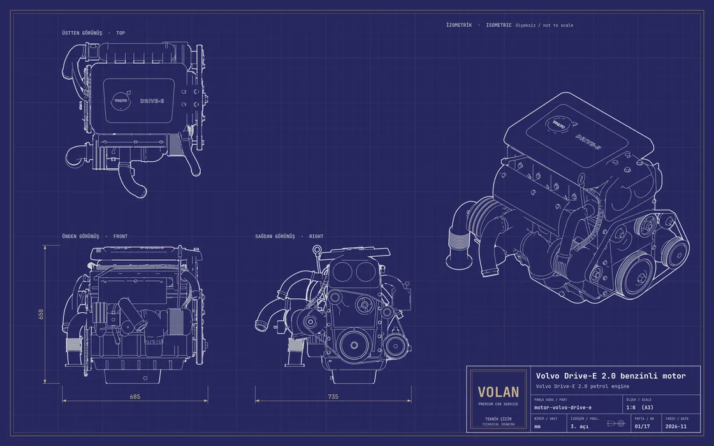
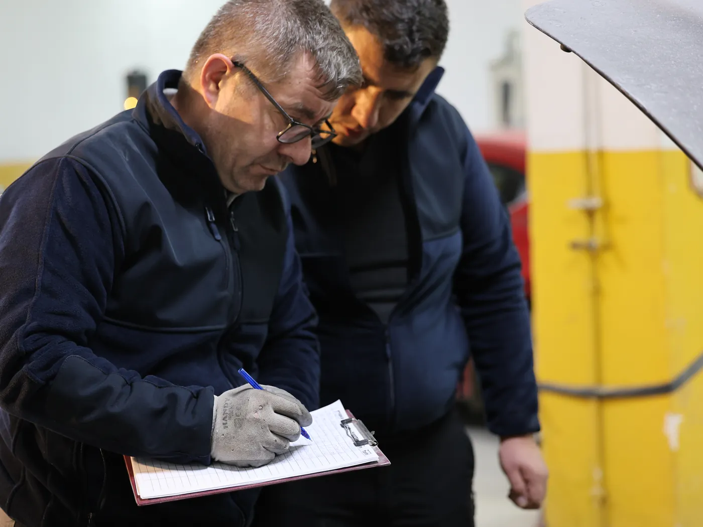
Periyodik bakım
Aracınızın yıllık bakımını yaşına, kilometresine ve üreticinin bakım programına göre planlar, motor yağını ve filtreleri değiştiririz. Bakım yaklaşık 3 saat sürer; iç ve dış yıkama dahildir.
Motor, şanzıman, debriyaj, fren, direksiyon ve süspansiyon onarımlarını yetkili servis kalitesinde yaparız. Arızalı parçayı önce onarmaya çalışır, gerektiği yerde aracınıza uygun parçayla değiştiririz.
Sensör, kablo tesisatı, aydınlatma, akü ve şarj sistemi arızalarını tespit cihazıyla bulur ve onarırız. Kontrol ünitesi (beyin) onarımı da servisimizde yapılır; aracınız başka bir yere gönderilmez.
Güncel teşhis cihazlarımız ve mekanik uzmanlığımızla arızanın kaynağını ilk seferde doğru belirleriz. Hangi işlemin neden gerektiğini açıklar, onarıma ancak onayınızla başlarız.
Aracınıza uygun yedek parçayı tedarik eder, montajını servisimizde yaparız. Teklif için aracınızın markasını, modelini ve yılını WhatsApp’tan yazmanız yeterli. Yedek parçaları shop.volan.com.tr adresindeki çevrim içi mağazamızdan da satın alabilirsiniz.
Kasko ve trafik sigortası kapsamındaki hasarları kendi kaporta ve boya atölyemizde onarırız. Hasar dosyasını ve ekspertiz sürecini sizin adınıza biz takip ederiz.
Kasko hasarı onarımı
Trafik sigortası hasarı onarımı
Hasar dosyası ve ekspertiz takibi
Anlaşmalı sigortalar: Ray · AXA · Anadolu · Ethica · Koru · Türkiye
Kaporta onarımı ve göçük düzeltmenin yanında lokal, parça ve komple boya yaparız. Boyayı atölyemizdeki boya fırınında uygularız. İyi bir kaporta boya işlemi, yapıldığı belli olmayan işlemdir.
Pasta cila ile boya yüzeyindeki kusurları giderir, seramik ve PPF kaplama ile boyayı dış etkenlere karşı koruruz. Servise giren her aracı iç dış yıkayıp teslim ederiz.
Pasta cila ve boya koruma
Su itici seramik kaplama
Parlak ya da mat PPF kaplama
Süre: pasta cila 2, seramik kaplama 2, PPF kaplama 4 iş günü
Çekicimiz aracınızı bulunduğu yerden alıp servisimize getirir, işi bitince size teslim ederiz. 0533 765 33 78’i aramanız ya da WhatsApp’tan konum göndermeniz yeterli.
Aracınız ister yağ değişimi ister motor onarımı için gelsin, atölyemizde aynı kurallarla ve aynı dikkatle çalışırız.
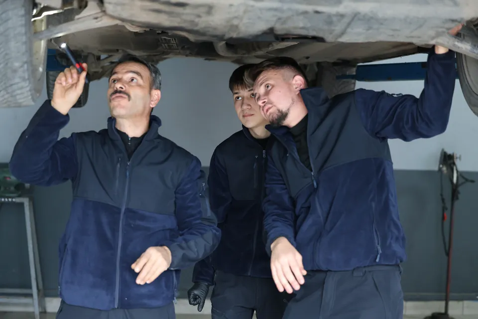
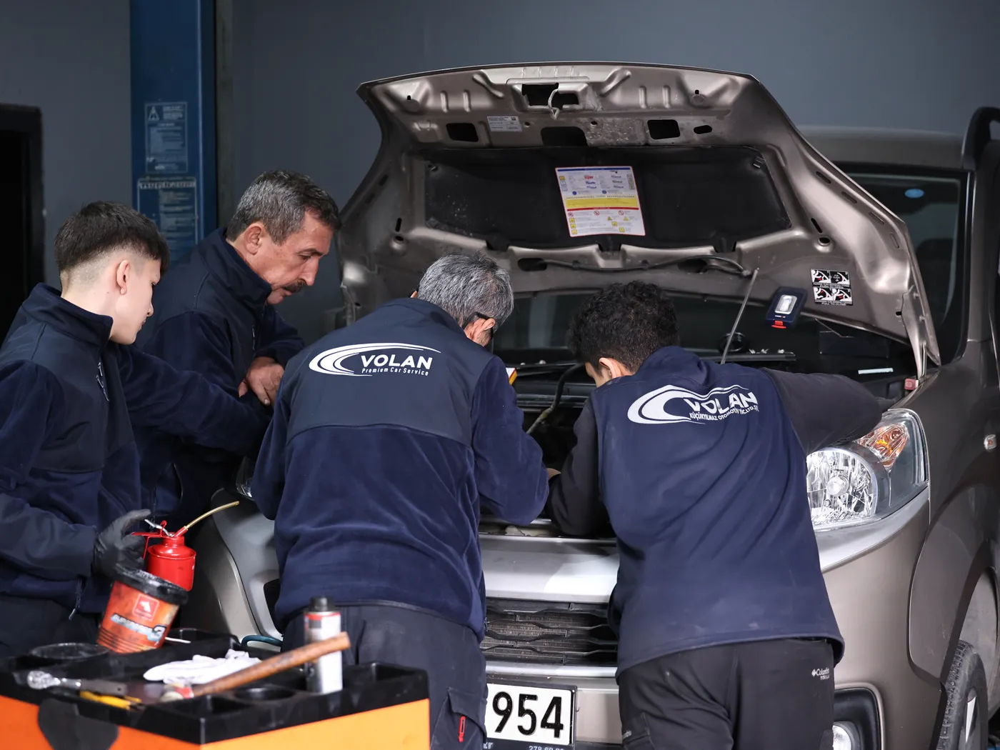
İş emri
NoHizmet kalitesiParafTamam
01
Doğru teşhis
Önce arızanın nedenini buluruz, sonra onarırız.
02
Teknik yetkinlik
Araç teknolojisi değiştikçe ustalarımızın bilgisini ve atölyemizin cihazlarını güncel tutarız.
03
Şeffaf süreç
Aracınıza ne yaptığımızı ve hangi parçayı neden değiştirdiğimizi teslimde size anlatırız.
04
Aracınıza özen
Aracınızı atölyede kaldığı sürece korur, size yıkanmış olarak teslim ederiz.
05
İşimizin arkasındayız
Yaptığımız işte teslimden sonra bir sorun çıkarsa aracınıza yeniden bakarız. Çözümü bize aittir.
Teslim edenMüşteri
VolanVolvo · Drive-E
Volvo, Mercedes-Benz ve Volkswagen uzmanlığı
Volvo, Mercedes-Benz ya da Volkswagen’inizi, markasını yakından tanıyan ustalara emanet edersiniz.
Volvo özel servisi
Adımızdaki “Vol” Volvo’dan, “an” Ankara’dan gelir.
Uzun yıllar Volvo yetkili servisi olarak çalıştık; Volvo’nuza o yılların birikimiyle bakıyoruz.
Devamını oku
Binek Volvo’ların bakımına 1970’lerde, 144 ve 244’lerle başladık. O günden bugüne markanın her yeni teknolojisini atölyede, aracın başında öğrendik.
Volvo’nuzun bakımını markanın servis prosedürlerine göre yaparız. Volvo’larda sık görülen sorunları tanıdığımız için arıza çıkmadan önce nereye bakacağımızı biliriz.
Periyodik bakım • Mekanik onarım • Elektronik • Arıza tespiti • Kaporta ve boya
Mercedes-Benz özel servisi
Mercedes-Benz’inizin periyodik bakımını, arıza tespitini ve mekanik onarımını üreticinin servis prosedürlerine göre yaparız.
Periyodik bakım · arıza tespiti · mekanik onarım
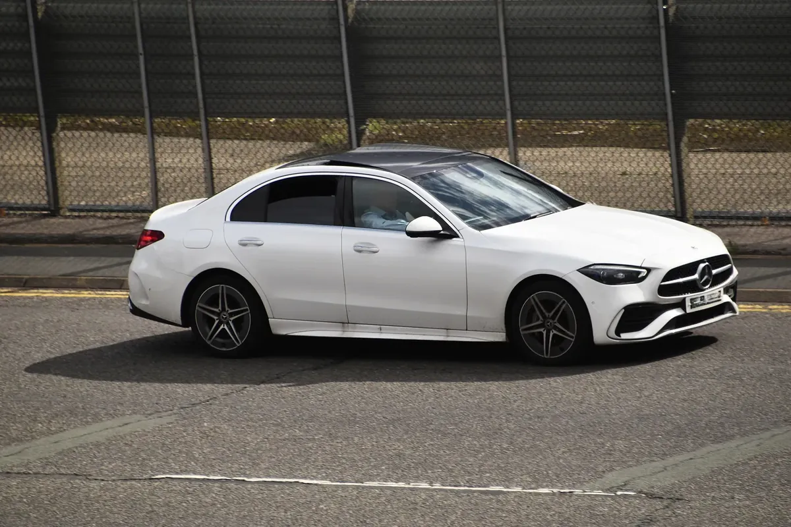
Volkswagen özel servisi
Volkswagen’inizin bakımını üreticinin bakım programına göre planlar, arıza tespitini ve onarımını aynı atölyede yaparız.
Periyodik bakım · arıza tespiti · mekanik onarım
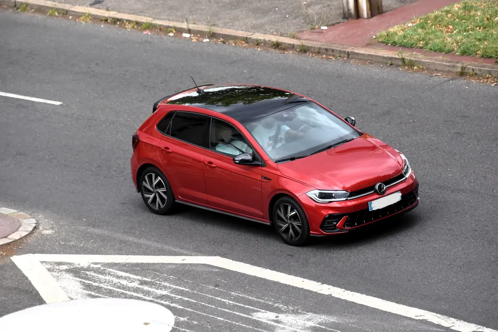
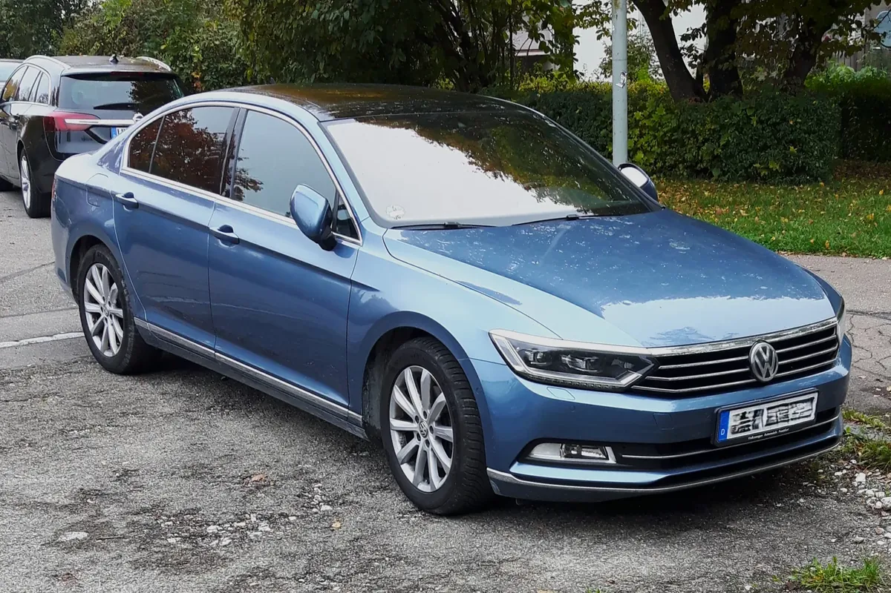
Volan Otomotiv · Servis formu
Önce tespit. Sonra bilgilendirme. Onayınızdan sonra işlem.
Aracınıza ne yapılacağına siz karar verirsiniz.
1
Tespit
Aracınızı kontrol eder, arızanın kaynağını ya da bakımda yapılması gerekenleri belirleriz.
2
Bilgilendirme
Ne bulduğumuzu anlatır, önerdiğimiz işlemleri ücretleriyle birlikte size söyleriz.
3
Onayınızdan sonra işlem
İşe siz “tamam” dedikten sonra başlarız. Onarım sırasında yeni bir ihtiyaç çıkarsa durur, size yeniden sorarız.
Sizin onayınız
Onayınız olmadan işlem yokVolan Otomotiv · Ankara
Sayılarla Volan Otomotiv
Bugüne kadar 200.000’den fazla aracın bakımını ve onarımını üstlendik.
Volan OtomotivTesis tip plakası
Kuruluş
1954
Sektörde
70+ YIL
Tesis alanı
1.800 m²
Personel
25
Bakımını üstlendiğimiz araç
200.000+ARAÇ
Lift
5
Marka
3
Hizmet alanı
9
Çalışma
PZT–CMT 08:30–18:00
Markalar
Volvo · Mercedes-Benz · Volkswagen
Premium Car Service · Since 1954Şaşmaz Oto Sanayi, Ankara
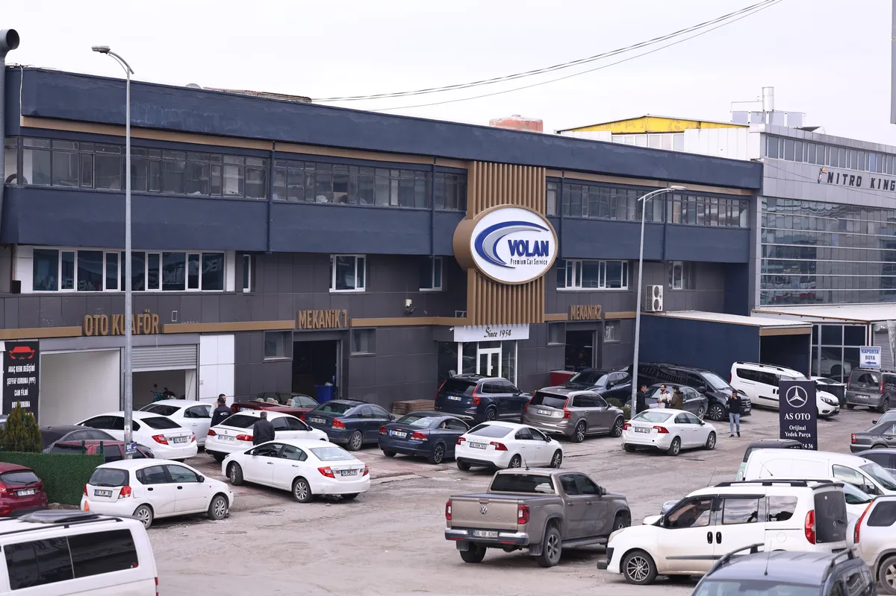
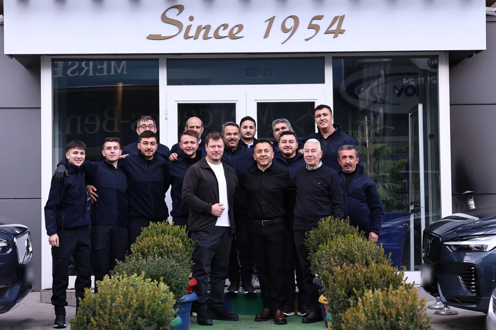
Şaşmaz’da 1.800 m² servis binamız
Aracınız mekanik için bir atölyeye, boya için bir başkasına gönderilmez. Bakımdan kaporta ve boyaya bütün işler üç katlı binamızda yapılır. Siz de üst kattaki bekleme salonunda çayınızı içebilirsiniz.
Kat dizini
Üst kat
Bekleme salonu
Ana kat
Oto kuaför · Mekanik 1 · Mekanik 2
Alt kat
Kaporta · boya fırını
Giriş
Cepheden, ana kata
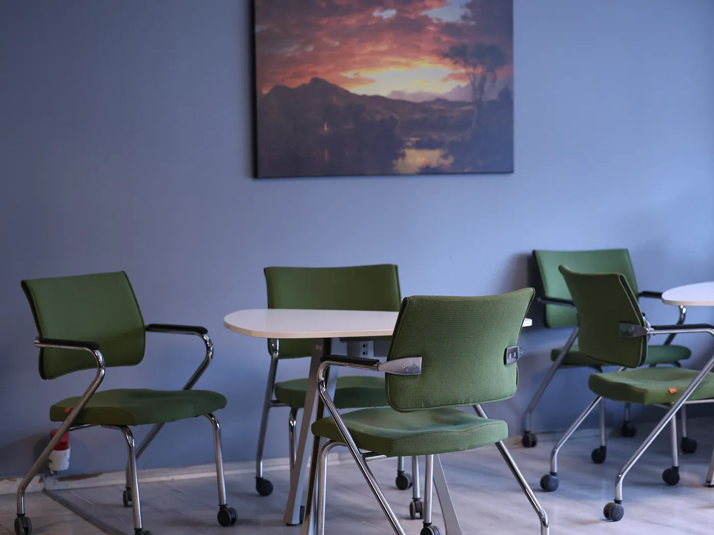
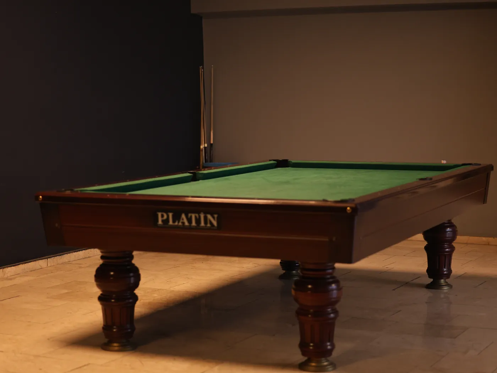
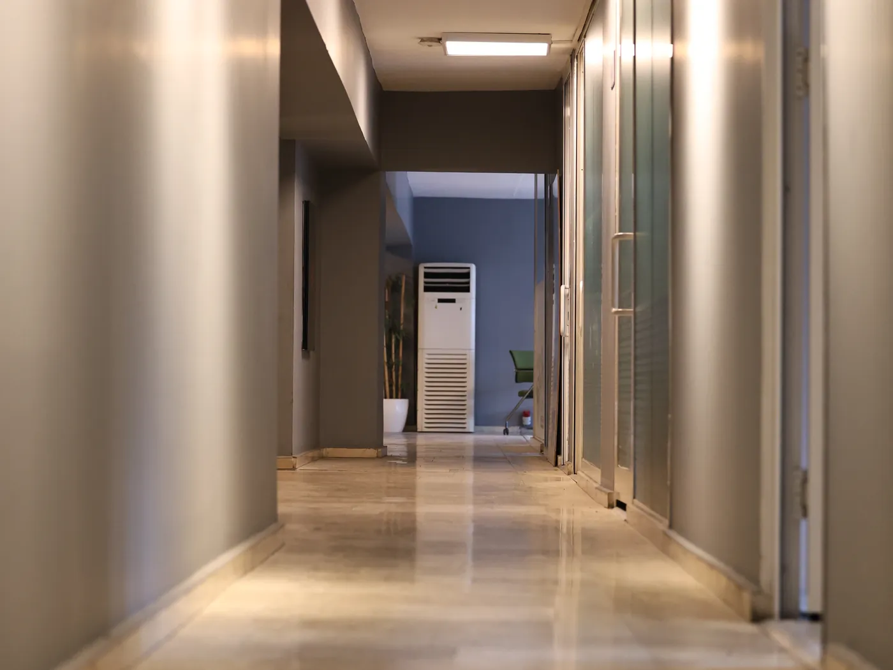
Üst kat · bekleme salonu
Üst kat · bekleme ve ofisler
Merdivenle ana kattan
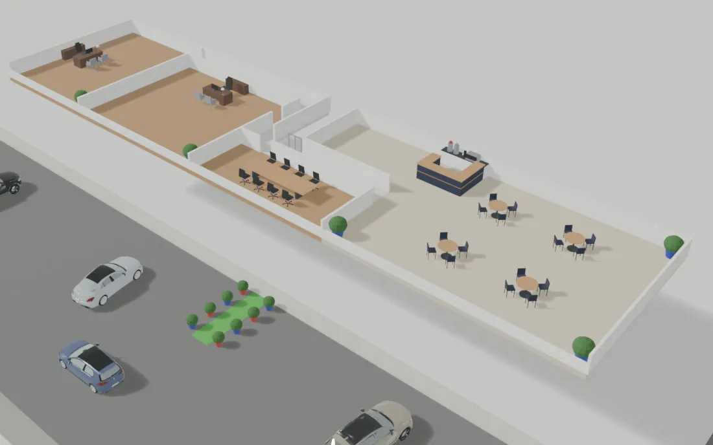
1234
1
OfislerYönetim ofisleri, iki oda.
2
Toplantı odasıSekiz kişilik masa, ekran.
3
Çay-kahve barıBekleme salonunun yanında.
4
Bekleme salonuDört masa ve oturma alanı.
Ana kat · mekanik ve giriş
Cepheden girilen kat
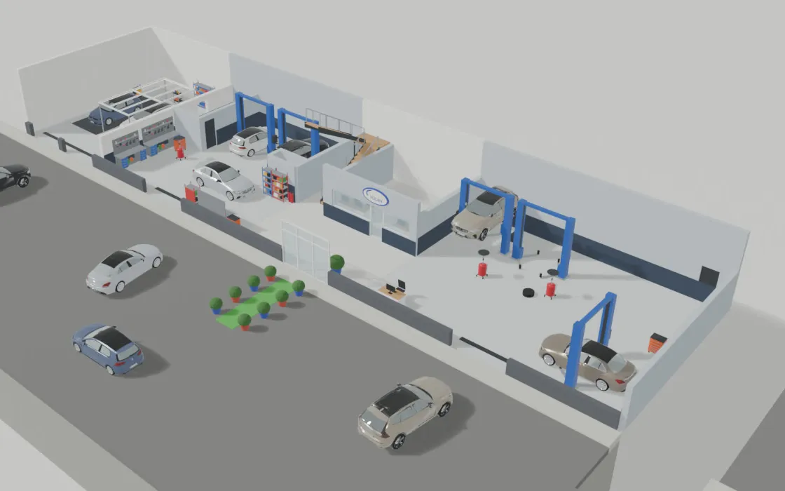
12345
1
Oto kuaförPasta cila, seramik kaplama, PPF kaplama.
2
Mekanik 1İki lift ve takım duvarı.
3
Giriş ve ofisKarşılama ve servis danışmanı.
4
Mekanik 2Üç lift.
5
Kaporta / boya girişiSağ kapıdan rampayla alt kata inilir.
Alt kat · kaporta ve boya
Rampayla, sağ girişten
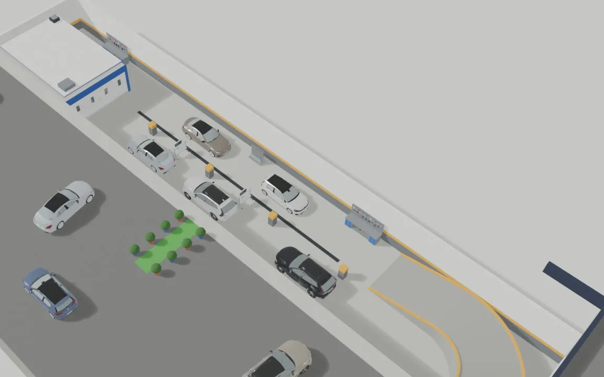
123
1
Boya fırınıAtölyenin uzak ucunda.
2
Kaporta atölyesiİki sıra araç, düzeltme sehpaları.
Aracımın periyodik bakımı ve birkaç arızası için götürdüm, profesyonel ve titiz bir hizmet aldım. Kenan beye teşekkürler
— Teoman U. · 24.07.2025
Google yorumu
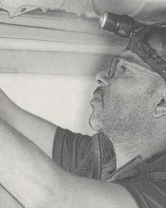
Volan1954
Volan Otomotiv
Bahçekapı Mah. 2547. Sk. No:3
Etimesgut / Ankara
Aracımızin turbo arızası için geldiğimiz serviste kenan bey e ve ekibine teşekkür ediyorum. İlgili ve tecrübeli ekibi ile söylediği günde aracımızı teslim etti
— Murat.Y · 24.07.2025
Google yorumu
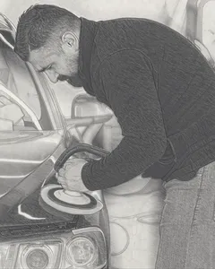
Volan1954
Volan Otomotiv
Bahçekapı Mah. 2547. Sk. No:3
Etimesgut / Ankara
Profosyonel full servis memnun kaldım. Ayrıca müşteri hizmeti tm bir servise yakışan hareketler
— Ali Özdemir · 19.07.2023
Google yorumu
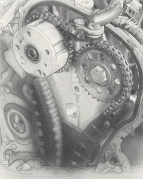
Volan1954
Volan Otomotiv
Bahçekapı Mah. 2547. Sk. No:3
Etimesgut / Ankara
1 / 1
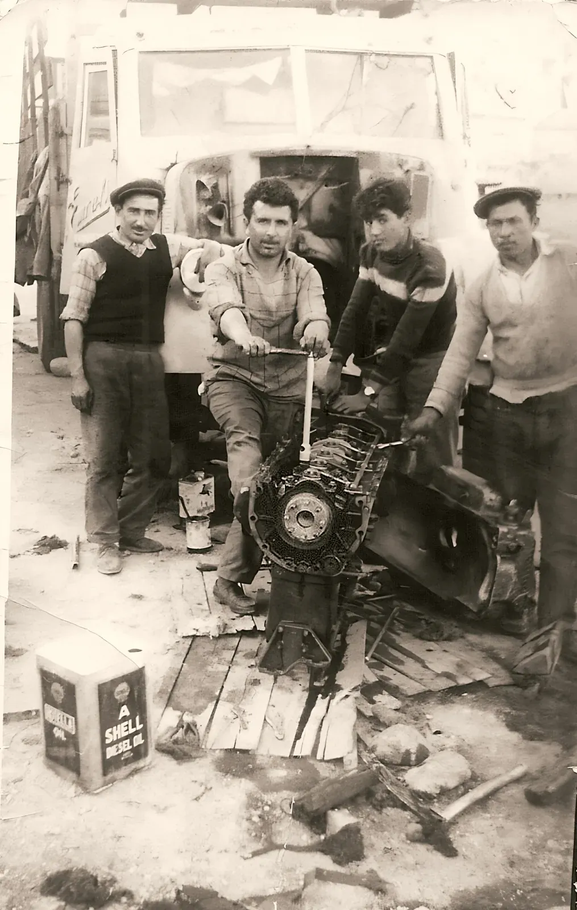
1954’ten bu yana aynı yolda.
1954’te Ankara’da kurulduk, uzun yıllar Volvo yetkili servisi olarak çalıştık. Aynı ustalık bugün Şaşmaz’da sürüyor.